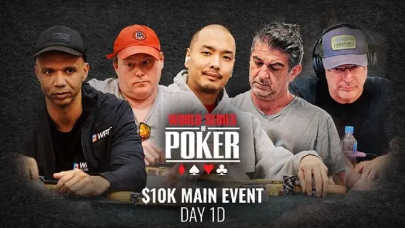

适用边界：锦标赛和赏金赛需要额外校准
锦标赛还要加入前注、风险溢价与赏金。普通MTT接近奖励跳跃时，多人全压的跟注范围通常比筹码EV更紧；PKO若能同时赢得多个赏金，覆盖关系可能显著放宽范围。先确认赛制、边池和有效筹码，再应用现金桌的紧范围基线。
一、为什么多一个对手会重写整套策略
单挑底池中两名玩家分享全部权益；加入第三人后，原本领先的牌也会被新范围分走大量胜率。顶对对一个宽范围可能稳定领先，对两个合理范围却经常只能接近五成。至少一名对手击中牌面的概率上升，纯诈唬需要所有人弃牌才成功。
同时，任何一名防守者都不必独自阻止进攻者获利。若下注者诈唬需要全体弃牌50%，两名对手各自弃约70.7%，总体弃牌率才约50%。每个人都可以比单挑面对同尺度时防守更紧，这被称为共享防守责任。
因此多人策略同时出现两个方向：下注者减少弱价值和纯空气，面对下注者也减少边缘跟注。很多玩家只记住“多人更容易有人有牌”，却仍用单挑范围行动，正是在两端持续支付错误成本。
二、错误一：翻前因为底池赔率好就过宽跟注
前位开池、关煞位跟注，按钮看到更大底池和较低直接价格，很容易用弱同花牌、不同花高张或小对子加入。但身后盲注仍可挤压，最初开池者范围较强，跟注者也已占据部分可玩组合。你的原始权益和实现率同时下降。
多人底池提高隐含赔率，也提高反向隐含赔率。小同花牌成花时可能输给更高同花，不同花A击中顶对时被更好踢脚支配，小连张成低顺时可能遇到高顺。能形成坚果、拥有位置并能关闭翻前行动的牌，才更能利用额外死钱。
Upswing 对多人翻前的总结是：最常见错误就是进入过宽。实战先问身后挤压概率、自己的位置、有效筹码和坚果潜力，再看价格。便宜只降低门票，不保证看完五张牌还能实现账面权益。
三、错误二：把单挑全范围小注搬到多人牌局
单挑时，翻前进攻者在A高干燥牌面常能用小尺度覆盖很宽范围，因为一个对手必须保留足够防守。多人时，每位对手可以更紧，下注者又必须同时穿过多个范围。纯空气获得的总弃牌率下降，全范围下注的理论基础被削弱。
即使进攻者拥有较多AA、AK，也不等于拥有全部坚果。冷跟者可能保留暗三条、两对和同花高张；大盲范围更宽，能包含更多低张两对与顺子。范围优势若没有坚果优势支撑，下注频率应该明显下降。
修正方法是先检查三个范围的交集：哪些牌所有人都有，哪些坚果只在某一方，哪些中等牌被多家夹击。把下注集中于稳定价值和高质量半诈唬，更多中等摊牌牌过牌实现权益，完全无后门的空气直接放弃。
四、错误三：认为每个人都必须按单挑MDF防守
面对满池下注，单挑对手需要约50%防守才能阻止任意两张牌获利。三人底池中，两名防守者共同承担这项责任，不要求每个人都守住一半。若你处在第一个行动位，后面还有玩家可能跟注或加注，边缘跟注甚至会被挤出当前街。
行动关闭者通常能多防守，因为没有身后加注风险，价格也更加确定。夹在中间的玩家则最难：前面有人下注，后面有人未行动，跟注并不保证看到下一张牌。这让相同牌力在不同相对位置拥有不同价值。
“我不能被他用任意两张牌诈唬”是单挑直觉。多人时，另一个玩家本身就在约束下注者。没有人需要英雄式守住所有边缘组合，特别是下注来自位置外且经过两名对手时，范围通常更偏价值。
五、错误四：高估普通顶对和超对的价值
顶对顶踢在单挑通常能多街取值，多人时被跟注后的集体范围更强。一名对手可能用弱顶对继续，另一名可能持两对、暗三条或强听牌；当两家同时跟注，转牌价值密度迅速上升。继续大注会让所有更差牌退出，只剩高权益组合。
超对也不是自动三街。低张连通牌面如7♠5♦3♣，盲注跟注范围包含更多两对、暗三条和顺子，翻前进攻者虽有AA至TT，却未必拥有坚果优势。中等尺度或过牌常比大注更能保留更差对子并控制底池。
价值下注前写出“哪两类更差牌会跟”。如果答案只有听牌，而听牌又拥有大量权益，这手牌更像保护而非厚价值。多人底池要提高价值门槛，不能用牌名决定打几街。
六、错误五：用弱听牌做大额半诈唬
多人跟注范围收紧，纯诈唬更难，高权益半诈唬仍可下注，但补牌质量必须重新审查。6♠5♠在A♠Q♠8♥有同花听牌，却只会形成低同花；面对两人范围，K♠X♠、J♠T♠等更高听牌更常存在，名义九张黑桃并非全部干净。
坚果同花听牌、开放顺子加高张、对子加坚果听牌更适合主动，因为成牌后愿意承受多家行动。弱卡顺和低同花即使获得直接赔率，也可能在击中后继续输钱。下注放大底池前，应问“我成牌后希望谁支付，又害怕谁继续”。
GTO Wizard 强调坚果潜力在多人底池更重要，因为打光范围更紧。半诈唬选择应由可实现权益、坚果补牌和位置驱动，而不是简单统计补牌数量。
七、图示复盘：桌上人数必须成为第一项变量
视频或牌谱回放中，观众常只盯住主角与最终对手，忽略翻牌其实有三到四人。即使第三名玩家最终弃牌，他在行动时的范围也会限制前两人的下注、跟注和加注。不能用最终单挑结果倒推早期决策。

记录时用P1、P2、P3分别列范围，不把两名对手合并成一个“对方”。一名玩家偏高对子与Broadway，另一名偏小对子和同花连张；同一公共牌对二者的坚果分布完全不同。只有拆开，才能判断谁更可能下注、谁负责更多防守。
八、错误六：下注尺度过大，导致权益保留崩溃
大尺度让每名对手都能弃掉更多边缘牌，最终至少一家的继续范围可能非常强。所谓权益保留，是一手牌在下注被集体继续后还剩多少胜率。多人底池中，这个数字常比单挑骤降，甚至两对面对继续范围都不再领先。
小尺度能让稳定价值从更差对子和听牌获得支付，也允许强半诈唬以较低成本推进权益。它并不是为了便宜试探，而是与更紧的下注范围配合。若牌面让自己拥有明显坚果优势，也可以使用大尺度，但必须确认愿意面对多家继续或加注。
复盘时不要只看下注前胜率。比较下注被一人跟、两人跟和遭遇加注后的权益，才能判断尺度是否过度。一次大注拿下底池不证明长期有效，因为所有人弃牌只是结果分支之一。
九、完整场景：前位开池后的三人底池
100BB现金桌，HJ开到2.5BB，按钮跟注，大盲跟注。翻牌 K♥T♦4♠，底池约8BB。HJ持K♠Q♠，大盲过牌。单挑看KQ是清晰顶对价值，但按钮冷跟范围包含KQ、KJ、KT、TT、44和QJ；大盲还有K4、T4、44及更多顺子后门。
HJ若下注四分之三底池，被一人继续后的范围已经较强，被两人继续更糟。较小下注可从KJ、K9、Tx与QJ获取价值或保护，但过牌也合理：保留按钮的弱牌，避免被两家加注，并让自己的过牌范围含强顶对。
假设HJ下注三分之一，两家都跟。转牌9♠，大盲过牌。QJ完成顺子，KT仍是两对，J8、Q8增加听牌；KQ虽然获得卡顺与后门黑桃，却不再适合继续薄价值。过牌控制底池，并不等于放弃所有河牌。
河牌2♣，大盲过牌，按钮下注三分之二底池。HJ面对的是经过翻牌双人跟注、转牌三人过牌后的范围。先列按钮价值QJ、KT、TT、44及部分薄价值Kx，再列失败J8、Q8和同花后门。KQ是否跟注取决于按钮能否把足够失败听牌转成诈唬，而不是因为“顶对顶踢不能弃”。
十、位置在多人底池中比单挑更值钱
最后行动者能观察两名甚至更多玩家的动作，过牌后更容易免费实现权益，下注时也知道前方是否表现出强度。位置外玩家不仅先行动，还可能下注后被中间玩家跟注、最后玩家加注，导致已投入筹码却无法看到下一街。
翻前按钮即使支付价格略差，也常比小盲拥有更宽的合理冷跟范围；小盲虽然只需补较少筹码，却会在每一街先行动。大盲能关闭翻前行动，但翻后仍位置外。不能只用“我已经投入盲注”判断继续。
相对位置也重要。坐在下注者左侧意味着跟注后仍有多人未行动，防守应最紧；关闭行动者可以更准确使用直接赔率。牌谱笔记应记录行动顺序，而不仅是绝对座位名称。
十一、玩家池调整：多人更诚实，但并非没有诈唬
常见现场牌局翻前过度跟注、翻后又不愿弃掉任何对子。面对这类玩家，应扩大坚果价值、减少弱半诈唬，并用能被更差牌支付的尺度；不要试图用大注“赶走所有人”。多人底池的利润常来自强牌获得多家错误支付。
若对手多人翻牌明显过度弃牌，拥有范围和坚果优势时可以适度扩大小注，但仍选择带后门或阻断的诈唬。若某玩家只在多人底池下注强牌，面对其穿过多人后的转牌、河牌大注应大幅增加弃牌。
也不要认为多人绝无诈唬。强玩家会用坚果听牌和高权益组合保持范围完整，在行动都过牌后还会攻击封顶范围。调整必须来自相似节点的摊牌与频率，而不是一句“多人一定有牌”。
十二、多人底池复盘清单
第一，记录每条街仍在局中的人数；第二，分别写每名玩家翻前范围；第三，标注谁关闭行动、谁被夹在中间；第四，比较整体权益与坚果优势；第五，提高价值下注门槛；第六，只保留有坚果潜力的主要半诈唬。
第七，检查每个人的防守责任是否共享；第八，比较下注被一人和多人继续后的权益；第九，确认尺度与权益保留匹配；第十，重估弱同花、低顺和普通顶对的反向隐含赔率；第十一，按玩家池调整价值与诈唬；第十二，从结果中移除后来弃牌者造成的叙事偏差。
继续阅读翻牌持续下注常见错误、底池赔率与隐含赔率、范围阅读进阶和今日的高额现金桌视频复盘，可把多人范围、逐街行动和视频训练连接起来。
专业资料与延伸阅读
本文参考 GTO Wizard 的多人底池十项策略原则，以及 Upswing Poker 的多人翻前范围与挤压漏洞和多人底池价值下注调整。本文的错误分类、完整场景和复盘清单由 PokerRookie 按常见现金桌环境重新整理。